Алгоритмы можно представлять как
некоторые структуры, состоящие из отдельных базовых (т.е.
основных) элементов.
Естественно, что при таком подходе к
алгоритмам изучение основных принципов их
конструирования должно начинаться с изучения
этих базовых элементов. Для их описания
будем использовать язык схем алгоритмов и
школьный алгоритмический язык.
Логическая структура
любого алгоритма может быть
представлена комбинацией трех
базовых структур:
следование,
ветвление, цикл.
|
Характерной особенностью базовых структур
является наличие в них одного
входа и одного выхода.
1.
Базовая структура "следование". Образуется
последовательностью действий, следующих одно
за другим:
|
Школьный алгоритмический язык |
Язык блок-схем |
действие 1
действие 2
. . . . . . . . .
действие n
|
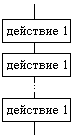 |
2.
Базовая структура "ветвление".
Обеспечивает в зависимости от результата
проверки условия (да или нет)
выбор одного из альтернативных путей работы
алгоритма. Каждый из путей ведет к общему
выходу, так что работа алгоритма будет
продолжаться независимо от того, какой путь
будет выбран. Структура ветвление существует
в четырех основных вариантах:
-
если—то;
-
если—то—иначе;
-
выбор;
-
выбор—иначе.
|
Школьный алгоритмический язык
|
Язык блок-схем |
|
1. если—то |
если условие
то действия
все
|
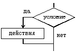 |
|
2. если—то—иначе |
если условие
то действия 1
иначе действия 2
все
|
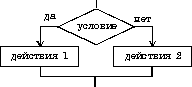 |
|
3. выбор |
выбор
при условие 1: действия 1
при условие 2: действия 2
. . . . . . . . . . . .
при условие N: действия N
все
|
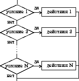 |
|
4. выбор—иначе |
выбор
при условие 1: действия 1
при условие 2: действия 2
. . . . . . . . . . . .
при условие N: действия N
иначе действия N+1
все
|
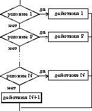 |
Примеры структуры ветвление
|
Школьный алгоритмический язык |
Язык блок-схем |
если x > 0
то y := sin(x)
все
|
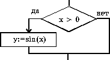 |
если a > b
то a := 2*a; b := 1
иначе b := 2*b
все
|
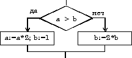 |
выбор
при n = 1: y := sin(x)
при n = 2: y := cos(x)
при n = 3: y := 0
все
|
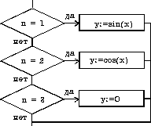 |
выбор
при a > 5: i := i+1
при a = 0: j := j+1
иначе i := 10; j:=0
все
|
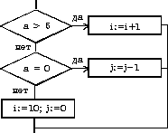 |
3. Базовая
структура "цикл". Обеспечивает многократное
выполнение некоторой совокупности действий, которая
называется телом цикла.
Основные разновидности циклов представлены в
таблице:
|
Школьный алгоритмический язык |
Язык блок-схем |
Цикл типа пока.
Предписывает выполнять тело цикла до
тех пор,
пока выполняется условие, записанное
после слова пока. |
нц пока условие
тело цикла
(последовательность действий)
кц
|
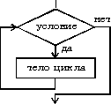 |
Цикл типа для.
Предписывает выполнять тело цикла
для всех значений
некоторой переменной
(параметра цикла) в заданном
диапазоне. |
нц для i от i1 до i2
тело цикла
(последовательность действий)
кц
|
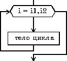 |
Примеры структуры цикл
|
Школьный алгоритмический язык
|
Язык блок-схем
|
нц пока i <= 5
S := S+A[i]
i := i+1
кц
|
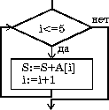 |
нц для i от 1 до 5
X[i] := i*i*i
Y[i] := X[i]/2
кц
|
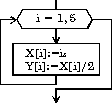 |
|